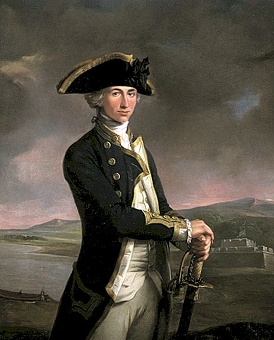
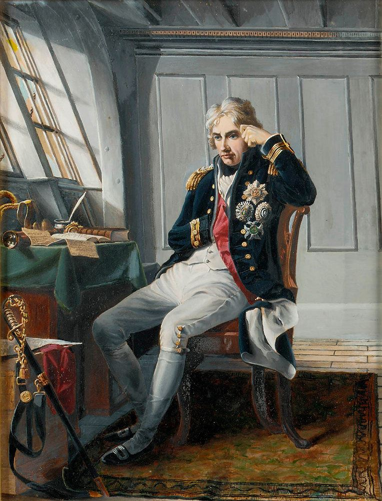

- Merhaba ben Yakup, bilgisayar mühendisliği öğrencisiyim 💻
- Birçok alanda kendimi geliştirmek için çabalayan biriyim 🔍
- Tarihi, edebiyatı ve bilgisayar oyunlarını seviyorum 🎮
- Hakkımda daha fazla bilgi için bunları aşağıya bıraktım ⬇
BLOG YAZILARIM
AMİRAL HORATIO NELSON
SAVAŞ ÖNCESİ
1798 yılında Napolyon komutasındaki Fransız ordusu 280 gemi 40.000 asker ile İskenderiye'ye gelerek Osmanlı'ya bağlı olan Mısır eyaletini işgal etti. Yaklaşık 300 yıldır dostu olan Fransa'nın böyle bir şeyi yapmış olması Osmanlı için şok edici bir haberdi. Öyle ki devlet ekranının gelen işgal haberine inanmakta da zorlandığı söylenir.
O vakitler İkinci Koalisyon savaşı devam etmekteydi bir tarafta Fransa diğer tarafta İngiltere önderliğinde Avrupa'da büyük bir savaş oluyor onlarca devlet birbirine giriyordu. Mısır'ın işgali ile Osmanlı'da Koalisyon Savaşına dahil oldu ve İngilizlerin yanında yer aldı. Fransız donanmasının Doğu Akdenizde olması İngilizleri hareketlendirdi.
Amiral Horatio Nelson komutasında İngiliz filosuna Fransız donanmasını imha etme görevi verildi.
MUHAREBELER
1 Temmuz'da Mısır'a ayak basan Fransız ordusu, 21 Temmuz'da Osmanlı ordusu ile Piramitler Muharabesini yaptı. 30.000 kişilik Osmanlı ordusu 12.000 kişilik Fransız ordusuna karşı yenik düştü. Böylelikle Napolyon'un önü açılmış oldu.
1 Ağustos'da Amiral Horatio Nelson,
Abukir limanında demirlemiş olan Fransız donanmasına saldırdı burada Nil Muharabesi gerçekleşti. Savaş sonucunda Fransız donanması imha edildi ve Doğu Akdeniz kontrolü İngilizlerin eline geçti.
Bu durum Fransa açısından oldukça kötüydü denizle bağlantısı kesilen Fransız ordusu herhangibir yardım alamayacaktı.
Elinde bir avuç ikmal gemisi kalan Napolyon'un askerlerini taşıması için daha büyük bir filoya ihtiyacı vardı. Bunun için Sayda Tershanesi'ndeki gemilere el koymayı planlıyordu fakat Sayda'yı almak için Akka'yı kuşatması şarttı.
Akka'yı kuşatan Napolyon'un ordusu yeterli sayıda cephane, gıda ve tıbbi malzeme bulunmuyordu. Bunun dışında Amiral Horatio Nelson'un denizden Osmanlı ordusuna destek vermesi, Osmanlı ordusunun iyi direnmesi ve Cezzar Ahmed Paşan'ın zekice hamleleri ile savaşın kazanını Osmanlılar oldu.
Napolyon Mısır'a geri dönmek zorunda kaldı
kısa bir süre sonrada Fransa'ya döndü.
NELSON HATIRASI
1801 Paris Senedi ile ateşkes, 1802 Paris Anlaşması ile Fransa ile Osmanlı arasında barış yapıldı. Fransızlar Mısır'dan tamamen çekildi.
Savaştan sonra Amiral Horatio Nelson'a
Sultan III. Selim tarafından Osmanlı Nişanı verilmiştir. İlk defa yabancı bir kişi bu nişana layık görülmüştür. Horatio Nelson ölümüne kadar ay yıldızlı bu nişanı göğsünde taşımıştır. Nelson 1801'de Kopenhag Muharebesi'nde Norveç-Danimarka donanmasını yendi. Yaptığı savaşlarda düşman gemilerine atlayıp göğüs göğüse çarpışmış hatta bir savaşta sağ kolunu kaybetmiştir. Askerinin güvenini ve saygısını kazanmıştır. 1805 yılında Trafalgar Muharebesinde birleşik Fransız-İspanyol donanmasını tek bir gemi kaybetmeden yendi. Bu zafer ile Fransız-İspanyol donanmasının İngiltere'yi işgal etme planlarına engel oldu.
Savaş esnasında ağır yaralanan nelson hayatını kaybetti. Aldığı önemli deniz zaferleri ile İkinci Kolalisyon Savaşı'nın en ünlü isimlerinden biri oldu. İngilizler tarafından büyük bir saygıyla alınan Amiral Nelson'un bugün Londra'da heykeli bulunmaktadır. Heykelin bulunduğu meydana da aldığı son zaferin ismi olan Trafalgar denilmiştir. Ayrıca Nelson'un komuta ettiği Victory gemisi bugün İngiltere'de sergilenmektedir. Kendisinden sonra gelen birçok amirale ilham kaynağı olmuş taktikleri uzun yıllar kullanılmıştır.

